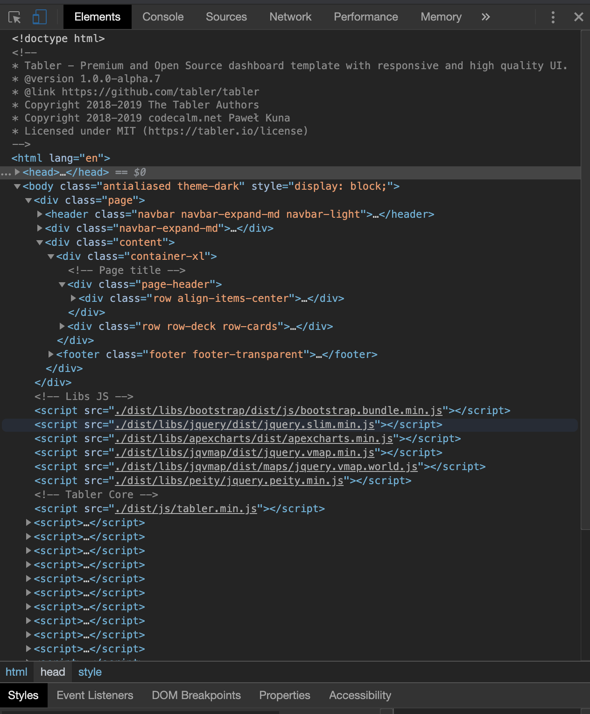
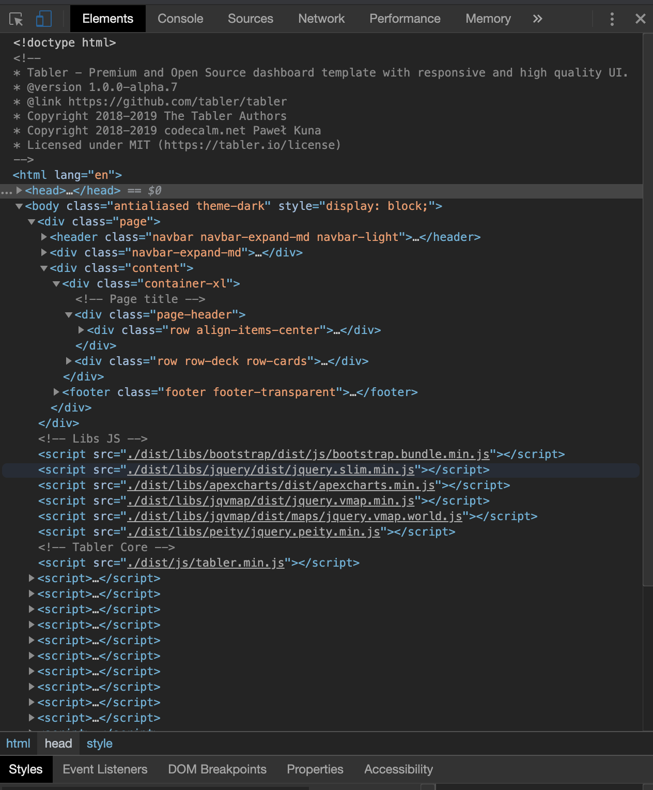

17 Define dependencies
The Tabler template is a tiny Bootstrap 4 dashboard template. In this chapter, we will describe how to customize Tabler by providing an R wrapper. In this way, the underlying JavaScript code is left untouched yet we are able to incorporate greater functionality.
17.1 Discover the project
The first step of any template adaptation consists of exploring the underlying Github repository (if open source) and look for mandatory elements, like CSS/JS dependencies. This is a similar strategy if you want to incorporate an htmlWidget as well.

FIGURE 17.1: Github project exploration
As shown in Figure 17.1, the most important folders are:
- dist: contains CSS and JS files as well as other libraries like Bootstrap and jQuery. It is also a good moment to look at the version of each dependency that might conflict with Shiny
- demo is the website folder used for demonstration purpose. This is our source to explore the template capabilities in depth
The scss and build folder may be used to customize the tabler template directly. However as stated above, directions on how to do so are out of scope for this book.
17.2 Identify mandatory dependencies
Bootstrap 4, jQuery, tabler.min.css and tabler.min.js are key elements for the template, contrary to flag icons which are optional (and take a lot of space). If your goal is to release your template on CRAN, be mindful of the 5 Mb maximum size limit. From personal experience, I can attest that this is quite challenging to manage.
To inspect dependencies, we proceed as follows
- Download or clone the Github repository
- Go to the demo folder and open the layout-dark.html file
- Open the HTML inspector
 

As depicted in Figure ?? left-hand side, we need to include the tabler.min.css from the header. If you are not convinced, try to remove it from the DOM and see what happens. jqvmap is actually related to an external visualization plugin used in the demo. Finally the demo.min.css file is for the demo purpose. This will not prevent the template from working, so we will skip it for now. So far so good, we only need one file thus!
JavaScript dependencies are shown on the right-hand side and located at the end of the body tag. Because we will not need all chart-related dependencies like apexcharts, jquery.vmap and vmap world and may safely ignore them. We will keep the Bootstrap 4 bundle.js, jQuery core and tabler.min.js (the order is crucial).
17.3 Bundle dependencies
With the help of the htmltoolsDependency function, we are going to create our main Tabler HTML dependency containing all assets to allow our template to render properly. In this example, I am going to cheat a bit: instead of handling local files, I will use a CDN (content delivery network) that hosts all necessary Tabler assets. This avoids to include all the necessary files in the R package, as well as in a github repository.
tablers_deps <- htmlDependency(
name = "tabler",
version = "1.0.7", # we take that of tabler,
src = c(href = "https://cdn.jsdelivr.net/npm/tabler@1.0.0-alpha.7/dist/"),
script = "js/tabler.min.js",
stylesheet = "css/tabler.min.css"
)I advise the reader to create one HTML dependency per element. The Bootstrap version is v4.3.1 (Shiny relies on 3.4.1) and jQuery is 3.5.0 (Shiny relies on 3.4.1). We can also use a CDN:
bs4_deps <- htmlDependency(
name = "Bootstrap",
version = "4.3.1",
src = c(href = "https://stackpath.bootstrapcdn.com/bootstrap/4.3.1/js/"),
script = "bootstrap.bundle.min.js"
)
jQuery_deps <- htmlDependency(
name = "jquery",
version = "3.5.0",
src = c(href = "https://code.jquery.com/"),
script = "jquery-3.5.0.slim.min.js"
)We finally create our dependency manager:
# add all dependencies to a tag. Don't forget to set append to TRUE to preserve any existing dependency
add_tabler_deps <- function(tag) {
# below, the order is of critical importance!
deps <- list(bs4_deps, tablers_deps)
attachDependencies(tag, deps, append = TRUE)
}Notice the dependencies order in the deps list: this will be exactly the same order in the head of the HTML page. Some libraries require to be loaded at a specific place, like the Tabler dependencies which must come after Bootstrap.
It is not surprising since Tabler is built on top of Bootstrap 4.
Let’s see how to use add_tabler_deps. We consider a <div> placeholder and check for its dependencies with findDependencies (should be NULL). Then, we wrap it with add_tabler_deps.
tag <- div()
findDependencies(tag)## NULL
tag <- add_tabler_deps(div())
findDependencies(tag)## [[1]]
## List of 10
## $ name : chr "Bootstrap"
## $ version : chr "4.3.1"
## $ src :List of 1
## ..$ href: chr "https://stackpath.bootstrapcdn.com/bootstrap/4.3.1/js/"
## $ meta : NULL
## $ script : chr "bootstrap.bundle.min.js"
## $ stylesheet: NULL
## $ head : NULL
## $ attachment: NULL
## $ package : NULL
## $ all_files : logi TRUE
## - attr(*, "class")= chr "html_dependency"
##
## [[2]]
## List of 10
## $ name : chr "tabler"
## $ version : chr "1.0.7"
## $ src :List of 1
## ..$ href: chr "https://cdn.jsdelivr.net/npm/tabler@1.0.0-alpha.7/dist/"
## $ meta : NULL
## $ script : chr "js/tabler.min.js"
## $ stylesheet: chr "css/tabler.min.css"
## $ head : NULL
## $ attachment: NULL
## $ package : NULL
## $ all_files : logi TRUE
## - attr(*, "class")= chr "html_dependency"As shown above, our dependencies are applied to the div, in the correct order. This order is set by the list list(bs4_deps, jQuery_deps, tablers_deps) and allows use to avoid potential conflicts. If we try to run this simple tag in a shiny app, we notice that all dependencies are added to the <head> tag, whereas the original template loads JavaScript dependencies in the <body>. Unfortunately, htmltools does not allow developers to distribute dependencies in different places. Here there is no impact but for other templates like Framework7 (which is powering shinyMobile), JavaScript must be place in the body. In practice, this is challenging to guess and may only be solved by manual testing.
Even though the add_tabler_deps function may be applied to any tag, we will use it with the core HTML template, that remain to be designed!
Would you like to see if our dependency system works? Let’s meet in the next chapter to design the main dashboard layout.